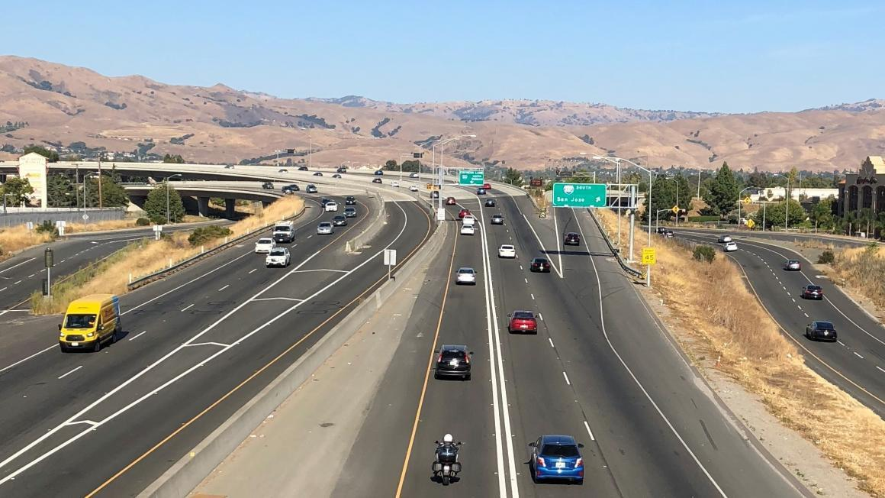
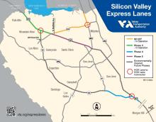

Project Details
- Category: Source Inspection Projects
- Owner: Santa Clara Valley Transportation Authority with Caltrans Oversight
- Location: Santa Clara County, CA
- Delivery Method: Project-specific delivery
- Status / Completion: 2016

This major congestion-relief project converted existing HOV lanes into express lanes across two of Silicon Valley�s busiest freeways. The project introduced new overhead sign structures, foundation systems, traffic management infrastructure, and roadway improvements to support real-time toll operations.
S2 Engineering provided quality assurance oversight for materials testing and structural source inspection. Key responsibilities included: � Development and approval of the project Source Inspection Quality Plan � Inspection of fabricated steel sign structures � Verification of welding operations and bolt assemblies � Oversight of concrete testing and foundation materials � Periodic QA audits of contractor testing activities
S2 ensured full Caltrans procedural compliance on a locally administered project, bridging the gap between agency standards and contractor production efficiency.
express lanes 237

svexplane map 021622 (1)